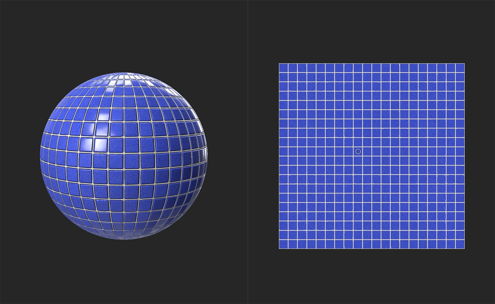
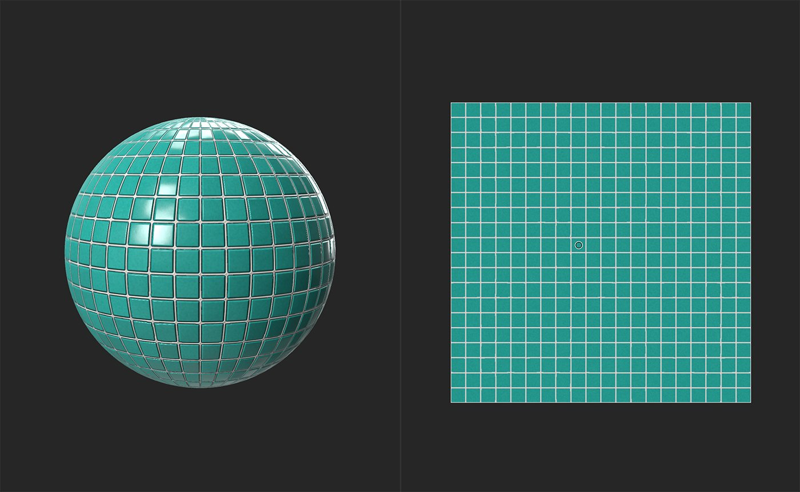

In: Adjustments
Replace a chosen color or value in a channel.
The images below show Color Replace in action. Notice how the areas between the tiles remains the same color - only the tiles themselves are changed.


Basic parameters
Mask
This mask is separate from the mask created under Basic parameters - you can use a custom mask to paint or use an image to specify areas to be affected by the Color Replace filter as a whole.
The Color Replace filter is a powerful way to modify the appearance of your materials - for example, use it to turn iron rust into oxidized copper
The filter works by first creating a mask based on the luminosity and color values of a chosen point, and then replacing the color of the area defined by that mask. So, to use the filter:
Sometimes it can be useful to use multiple Color Replace filters on top of one another to create more advanced effects.